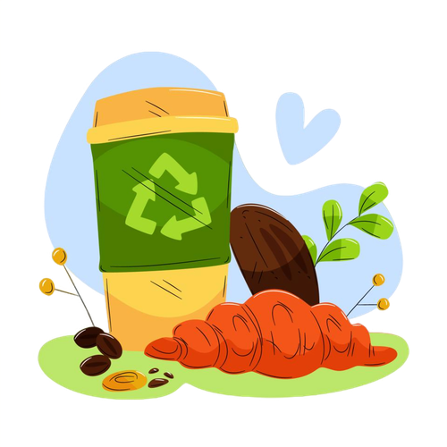

Create the sustainable miracle
Create the sustainable miracle
with Focle
What is Focle?
The waste processing platform from the community to create sustainable miracles with zero waste.
Want to join us?
What kind of waste can be processed at Focle?
How do we make the miracles?
The organic waste will have processed to be fertilizer.
Some of the qualified organic waste will have
processed to be animal feed